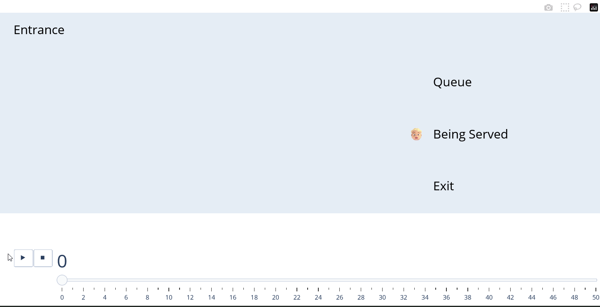
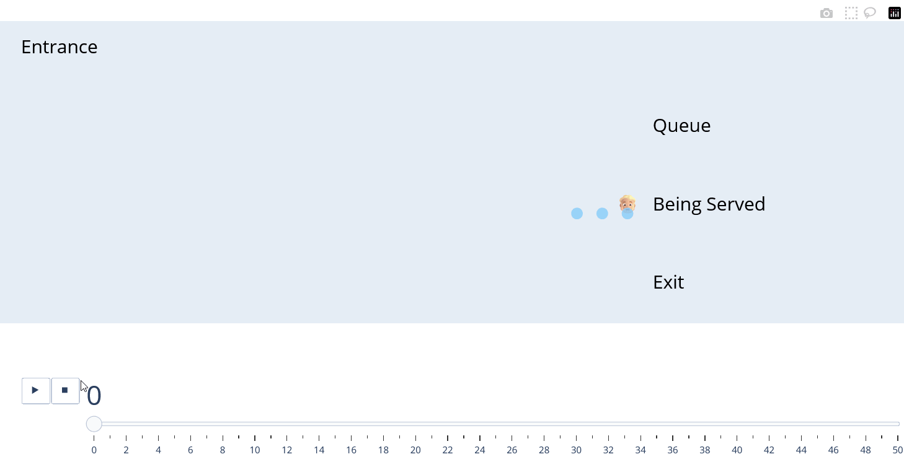
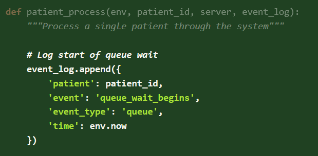
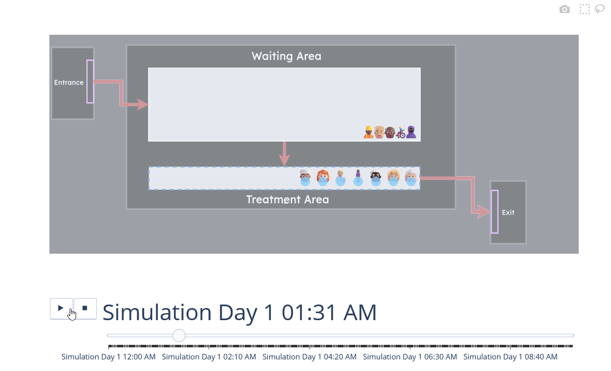
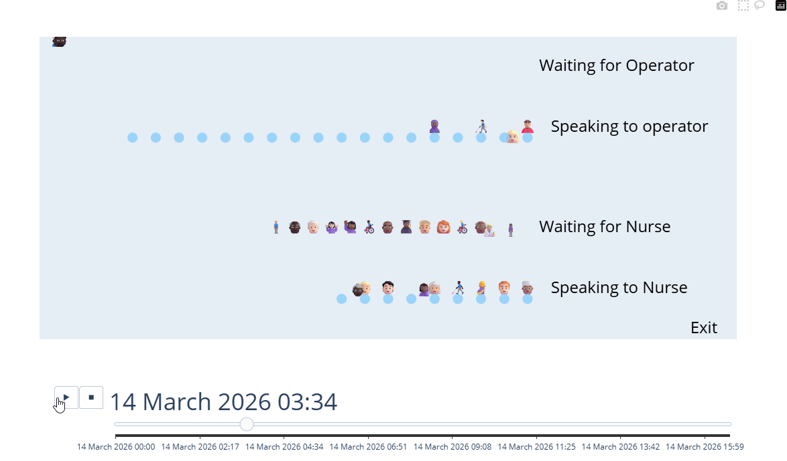

Getting Started
vidigi creates animations from event logs - records of what happens in your simulation and when. Here’s the basic process:
- Log events as your simulation runs (arrivals, queueing, resource use, departures).
- Define where events appear in your animation (x and y coordinates).
- Generate the animation using vidigi’s functions.
The rest of this page walks you through each step.
Learn by example
The fastest way to understand vidigi is through worked examples. We recommend starting with these:

A very simple example with one server

A slightly more complex example with multiple servers

A very simple example with one server - avoiding the vidigi logger class

Adding Vidigi to a Simple simpy Model (HSMA Structure) - vidigi 1.0.0 and above

A Simple Ciw Model
Want all examples in one place? Browse the full example gallery →
Step-by-step guide for SimPy
Step 1. Back up your model
Before adding Vidigi to your model, make sure to back up your current version first.
While vidigi has been tested to ensure that it’s special resource classes work the same as existing SimPy resource classes, it’s still possible to accidentally change your model. There’s also a chance that the vidigi classes don’t work identically to SimPy classes in more complex scenarios with reneging, baulking, or other conditional logic around resource allocation.
Therefore, it’s highly advisable to check the key output metrics from your model before and after incorporating vidigi!
Step 2. Replace your resources
SimPy resources need to be replaced with SimPy stores containing a custom .id_attribute, so that vidigi can track which specific resource each entity uses. This can have wider benefits for monitoring individual resource utilisation within your model as well.
Vidigi provides two helper classes to support with this: VidigiStore and VidigiPriorityStore.
Replace this:
nurses = simpy.Resource(env, capacity=5)With this:
from vidigi.resources import VidigiStore
nurses = VidigiStore(env, num_resources=5)This becomes slightly more complex with conditional requesting (for example, where a resource request is made but if it cannot be fulfilled in time, the requester will renege). This is covered to some extent in some of the provided examples, but further demonstrations of this are planned.
Step 3. Log events
Use the EventLogger class to record key moments:
from vidigi.logging import EventLogger
logger = EventLogger(env=env, run_number=1)You must always log arrivals and departures, and you must also log when entities wait somewhere. You can choose whether to represent time in service using only queue events, or by adding explicit resource_use and resource_use_end events.
- With only queues, entities “move through” each stage, and you see when they join each queue and when they leave it.
- With resource_use events, an entity stays visibly attached to the same resource for the whole time it is being used, which makes it easier to see how long that resource is busy with that entity, and how many resources are in use or idle at each stage
For arrivals and departures you only need the entity ID; for queues you also provide an event name; for resource use (start and end) you provide an event name and a resource identifier so vidigi can track which specific resource is in use. These arrival and departure events are used to decide when entities first appear and finally leave the animation; missing departures will slow things down as the log grows indefinitely.
You can capture these using EventLogger:
| When | Method |
|---|---|
| Entity arrives | logger.log_arrival(entity_id) |
| Starts waiting | logger.log_queue(entity_id, event="wait_for_nurse") |
| Starts using resource | logger.log_resource_use_start(entity_id, event="nurse_begins", resource_id) |
| Finishes using resource | logger.log_resource_use_end(entity_id, event="nurse_ends", resource_id) |
| Leaves | logger.log_departure(entity_id) |
This will create an event log in the required format for vidigi’s animation functions - for example:
| patient | pathway | event_type | event | time | resource_id |
|---|---|---|---|---|---|
| 15 | Primary | arrival_departure | arrival | 1.22 | |
| 15 | Primary | queue | enter_queue_for_bed | 1.35 | |
| 27 | Revision | arrival_departure | arrival | 1.47 | |
| 27 | Revision | queue | enter_queue_for_bed | 1.58 | |
| 12 | Primary | resource_use_end | post_surgery_stay_ends | 1.9 | 4 |
| 15 | Revision | resource_use | post_survery_stay_begins | 1.9 | 4 |
Example in your simulation:
# Patient arrives
logger.log_arrival(entity_id=patient.identifier)
# Patient waits for treatment
logger.log_queue(entity_id=patient.identifier, event="treatment_wait_begins")
# Patient receives treatment
with treatment_cubicles.request() as req:
treatment_cubicle = yield req
logger.log_resource_use_start(
entity_id=patient.identifier,
event="treatment_begins",
resource_id=treatment_cubicle.id_attribute
)
yield env.timeout(treatment_time)
logger.log_resource_use_end(
entity_id=patient.identifier,
event="treatment_complete",
resource_id=treatment_cubicle.id_attribute
)
# Patient leaves
logger.log_departure(entity_id=patient.identifier)Step 4. Ensure you have a class with resource counts
When you later define event positions for resource_use steps, you will also need to provide an identifier for the resource (for example a parameter such as n_treatment_cubicles) so vidigi knows how many resources to draw at that step. This, in turn, requires a small class or object to hold your resource counts that you can pass into the animation function.
If you are following the HSMA SimPy structure, this object will usually be your g class. Otherwise, you can create a simple parameters class to hold your resource counts and pass it to the animation function:
class ModelParams:
def __init__(self):
self.n_triage_resources = 3
self.n_treatment_cubicles = 5
params = ModelParams()Step 5. Determining event positioning in the animation
You need to tell vidigi where each queue and resource should appear in the animation. The easiest way is to create a DataFrame with one row per event position. The required columns are:
event: Must match the event name used in the event log.x: X co-ordinate of the event for the animation. This will correspond to the bottom-right hand corner of a queue, or the rightmost resource.y: Y co-ordinate of the event for the animation. This will correspond to the lowest row of a queue, or the central point of the resources.label: Text label for the stage. This can be hidden at a later step if you opt to use a background image with labels built-in. Use<br>for line breaks.resource(optional): Only needed if the step is aresource_usestep. This should match an attribute name on thescenarioobject passed toanimate_activity_log()and give the number of resources at that step.
Vidigi provides helper classes and functions for setting this up. For SimPy or manually created logs, we need to make sure the event name matches the event log:
from vidigi.utils import create_event_position_df, EventPosition
event_position_df = create_event_position_df([
EventPosition(event="arrival", x=50, y=450, label="Arrival"),
EventPosition(event="treatment_wait_begins", x=205, y=275,
label="Waiting for Treatment"),
EventPosition(event="treatment_begins", x=205, y=175,
label="Being Treated", resource="n_cubicles"),
EventPosition(event="depart", x=270, y=70, label="Exit"),
])If you prefer not to use the helpers, you can create the DataFrame directly from a list of dictionaries:
event_position_df = pd.DataFrame([
# Triage
{"event": "triage_wait_begins",
"x": 160, "y": 400, "label": "Waiting for<br>Triage"},
{"event": "triage_begins",
"x": 160, "y": 315, "resource": "n_triage", "label": "Being Triaged"},
# Trauma pathway
{"event": "TRAUMA_stabilisation_wait_begins",
"x": 300, "y": 560, "label": "Waiting for<br>Stabilisation"},
{"event": "TRAUMA_stabilisation_begins",
"x": 300, "y": 500, "resource": "n_trauma", "label": "Being<br>Stabilised"},
{"event": "TRAUMA_treatment_wait_begins",
"x": 630, "y": 560, "label": "Waiting for<br>Treatment"},
{"event": "TRAUMA_treatment_begins",
"x": 630, "y": 500, "resource": "n_cubicles", "label": "Being<br>Treated"},
{"event": "depart",
"x": 670, "y": 330, "label": "Exit"},
])Step 6. Create the animation
There are two main ways to create the animation:
Use the one-step function
animate_activity_log()See this simple example or this slightly more complex example for a demonstration of this.Use
reshape_for_animations(),generate_animation_df()andgenerate_animation()separately, passing the output of each to the next step. This allows more customisation (for example different icons for different patient classes). See this priority queueing example for a demonstration of this.
Usage Instructions with Ciw
Event logging with Ciw
With Ciw, you do not need to manually add log statements. Instead, use the event_log_from_ciw_recs helper function from vidigi.utils to reshape Ciw’s logs into the format vidigi requires.
from vidigi.utils import event_log_from_ciw_recs
event_log_test = event_log_from_ciw_recs(
logs_run_1,
node_name_list=["operator", "nurse"],
)For each node, we provide a name (e.g., operator, nurse). Vidigi uses these to generate event names (adding _begins and _ends), to infer arrivals and departures, and to create resource IDs so it can show utilisation correctly.
We then just need to create a suitable class to pass in the resource counts to the animation function.
class ModelParams:
def __init__(self):
self.n_operators = 4
self.n_nurses = 7
params = ModelParams()Event positioning with Ciw
For Ciw, event names in your event-position table must match the node-based names created byevent_log_from_ciw_recs. With nodes operator and nurse we will have:
arrivaloperator_wait_begins(queue for the operator)operator_begins(operator in use)nurse_wait_begins(queue for the nurse)nurse_begins(to show resource use of the nurse)depart
For the *_begins steps that represent resource use, the resource field should point to the appropriate resource count (e.g., n_operators or `n_nurses).
event_position_df = create_event_position_df([
EventPosition(event="operator_wait_begins", x=205, y=270, label="Waiting for Operator"),
EventPosition(event="operator_begins", x=210, y=210, resource="n_operators", label="Speaking to Operator"),
EventPosition(event="nurse_wait_begins", x=205, y=110, label="Waiting for Nurse"),
EventPosition(event="nurse_begins", x=210, y=50, resource="n_nurses", label="Speaking to Nurse"),
EventPosition(event="depart", x=270, y=10, label="Exit"),
])Usage Instructions with Other Libraries
Whatever library you use, whether your data is simulated or not, you can still still use vidigi as long as you:
- Have a list of events you want to animate.
- Known their start times.
- Can reshape them into the log format shown above.